Lec03-Feedback¶
1. 描述-DT¶
当前信号取决于过去的信号
例如 y[n] = y[n-1]过去的状态
有反馈信号：Cyclic 循环系统¶

Ex.
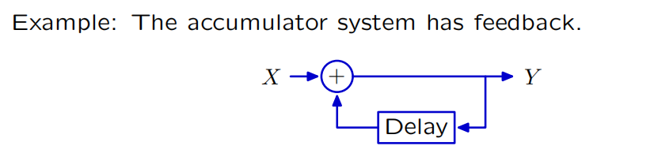
\[
Y = X + RY\\
y[n] = x[n] + y[n-1]
\]
-
有返回路的通路
-
结果与过去有关
无反馈信号：Acyclic非循环系统¶

Ex.
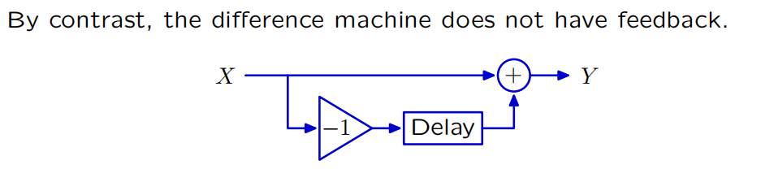
2. 推导¶
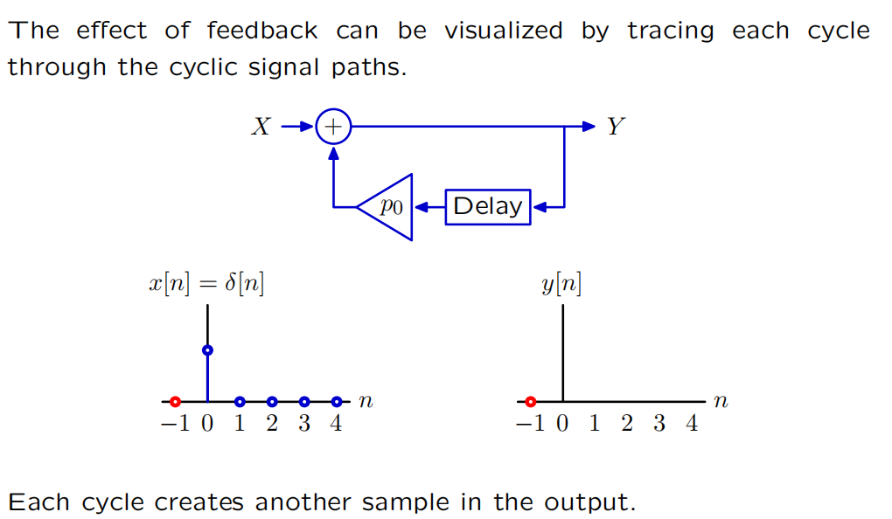
Note
注意x[n]为激励信号，只有n=0时x[n]=1
\[
y[0] = x[0] = 1
\]
\[
y[1] = x[1] + p_0y[0] = p_0
\]
\[
**直路加上环路**
\]
\[
y[2] = x[2] + p_0y[1] = p_0^2
\]
\[
…… \\= p_0^n
\]
有限/无限脉冲响应¶
Acyclic 非循环系统的冲激响应具有有限的持续时间，
Cyclic 循环系统的冲激响应可以具有无限的持续时间。

3. 几何增长¶
1. 收敛&发散¶
如果穿越周期会减小或增加信号的大小，那么基本模式将分别衰减或增长。 如果响应衰减到零，那么我们就说它收敛了。否则，我们就说它是发散了。
These geometric sequences are called fundamental modes 基本模态

$$
P_0^n = 0.5^n =>收敛
$$

\[
P_0^n = 1.2^n =>发散
$$

$$
Y = 1.2RX + 0.5 RY \\
==\\
y[n] = 1.2x[n-1]+0.5y[n-1]\\
x[n] = \delta[n] ->x[0]=1,else=0
\]
\[
y[0] = 0
\]
\[
y[1] = x[0] * 1.2= 1.2
\]
\[
y[2] = x[1] * 1.2 + y[0] * 0.5 * 1.2 = 0
\]
\[
y[3] = x[2] * 1.2 +y[1] * 0.5 * 1.2 = 0.6 * 1.2
\]
\[
…… \\
=> 0 ， 0.6 ^ n * 1.2
\]
收敛

2. 极点 Poles：¶
*总结：¶
\[
y[n] =
\left
\{
\begin{aligned}
p^n_0 &,& n>=0;\\
0&,&else
\end{aligned}
\right.
\]
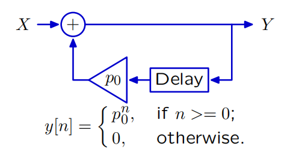
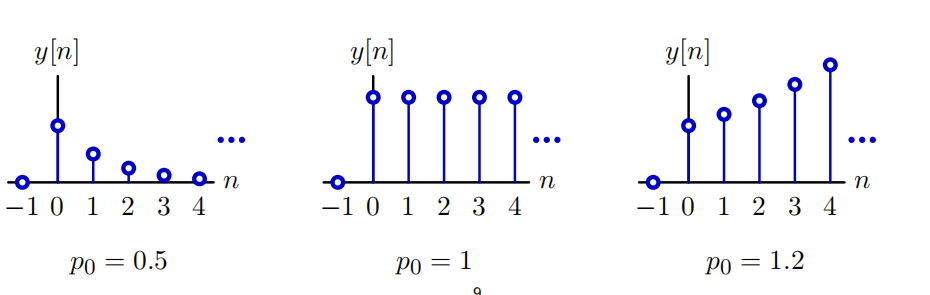
敛散性：¶
\[
\left
\{
\begin{aligned}
p_0 < |1| &; \longrightarrow 收敛\\
p_0 > |1| &; \longrightarrow 发散
\end{aligned}
\right.
\]
正负性：¶
\[
\left
\{
\begin{aligned}
p_0 < 0 &; \longrightarrow 符号翻转\\
p_0 > 0 &; \longrightarrow 单调
\end{aligned}
\right.
\]

4. 二阶循环系统¶
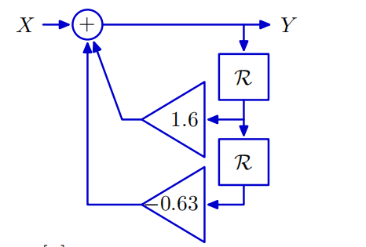
\[
Y = X + 1.6RY -0.63R^2Y
\]
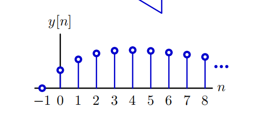
先增加后减少 - 没有几何增长
1. 一阶系统转换¶
 $$
Y = X + p_0RY\
\frac{Y}{X} = \frac{1}{1-p_0R}
$$
$$
Y = X + p_0RY\
\frac{Y}{X} = \frac{1}{1-p_0R}
$$
- 转换为差分方程 $$ y[n] = x[n] + p_0y[n-1];n\geq0\ y[n] = p_0^n;n\geq0 $$
2. 高阶系统转换¶
\[
Y = X + 1.6RY -0.63R^2Y
\]
1. 因式分解¶
\[
(1-0.7R)(1-0.9R)Y = X
\]

2. 部分分式¶
\[
\frac{Y}{X} &=& \frac{1}{(1-0.7R)(1-0.9R)}\\
&=&\frac{4.5}{(1-0.9R)} - \frac{3.5}{(1-0.7R)}
\]
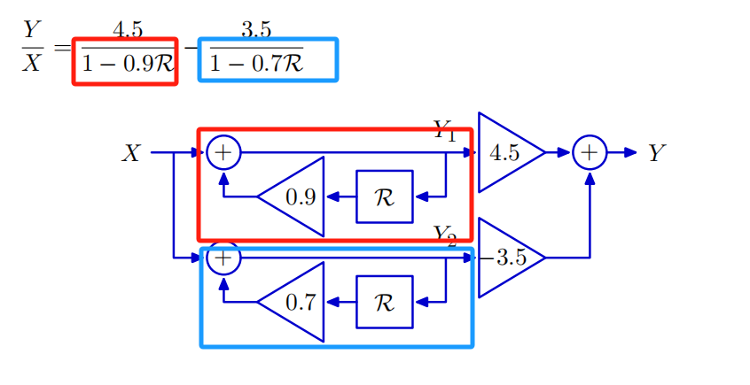
3. 差分方程¶
\[
y[n] = 4.5 * (0.9)^n -3.5 * (0.7)^n
\]
sup1. 系统方程 System functional¶
- 后面部分不与任何状态相关，是系统本身的部分
ex.
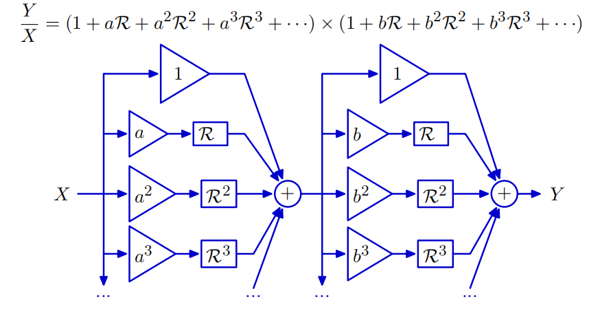
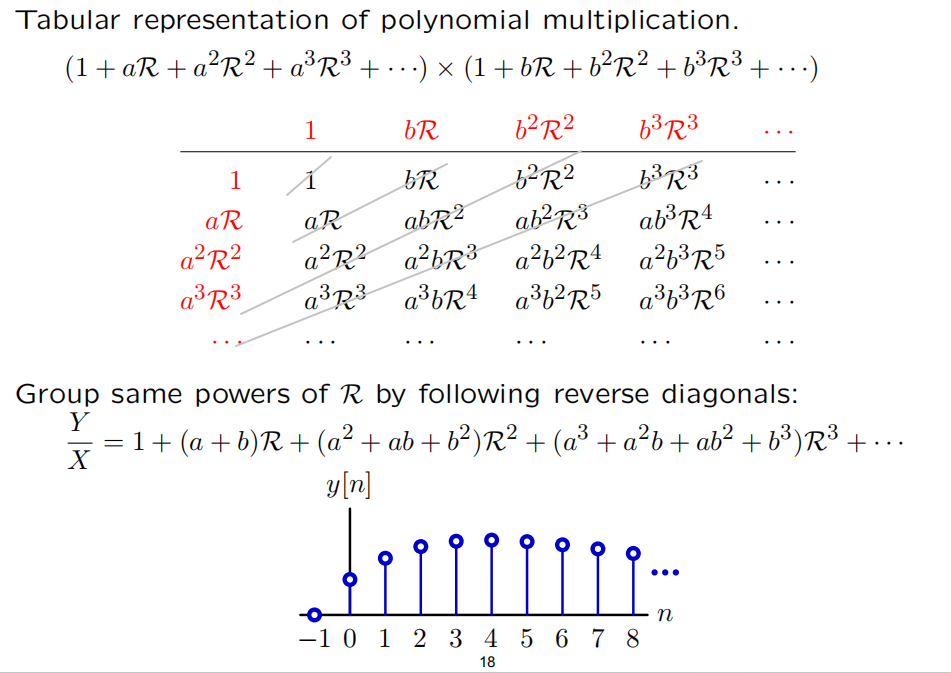
sup2. 求极点¶
1. 因式分解-部分分式¶
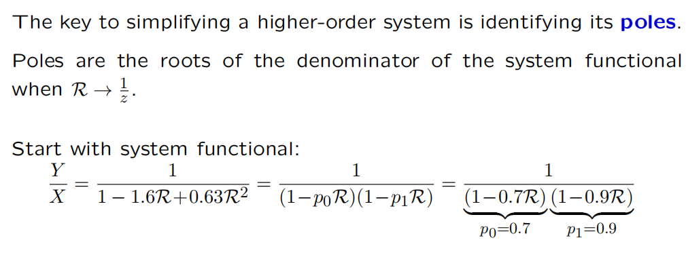
2. R = 1/z 代入求根¶
- ex.
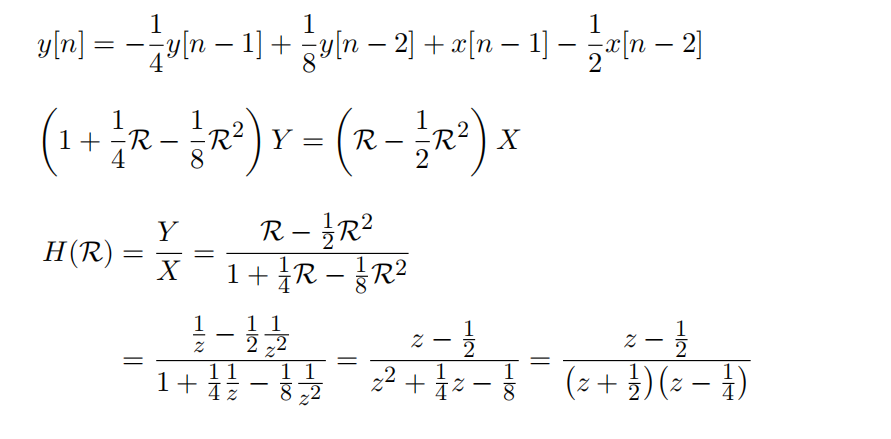
\[
=> z_1 = -1/2 , z_2 = 1/4
\]
sup3. 斐波那契系统 Fibonacci system¶
\[
y[0] = 1, y[1] = 1, y[2] = 2 ,y[3] = 3 , y[4] = 5,y[5] = 8
……
\]
\[
y[n] = x[n] + y[n-1] + y[n-2]
\]
\[
Y = X + RY + R^2Y
\]
\[
Y/X = 1/(1 - R - R^2)
\]
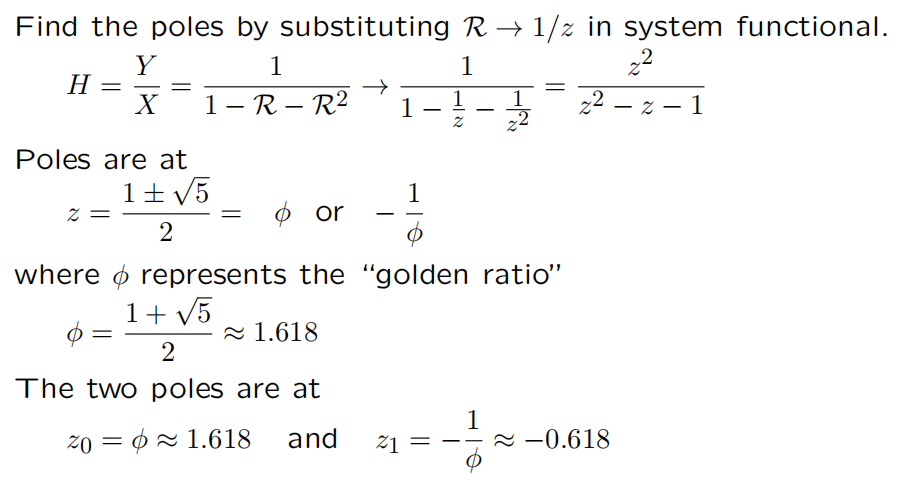

sup4. 复极点 Complex Poles¶

CT Feedbcak¶
Summary¶
-
由加法器、增益和延迟组成的系统可以通过其极点来表征。
-
系统的极点决定了其基本模态。
-
系统的单位样本响应可以表示为基模的加权和。
-
这些性质是从系统函数的多项式解释中得出的。
极点比较 CT&DT¶